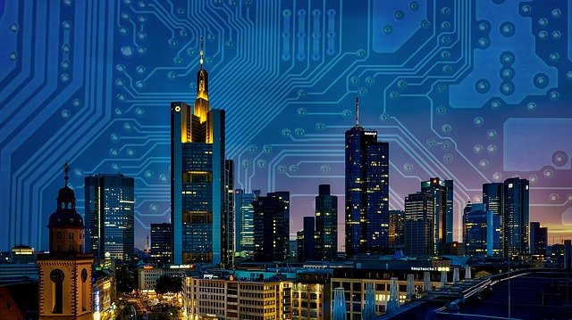

Una ciudad inteligente es un marco predominantemente compuesto por Tecnologías de la Información y la Comunicación (TIC), para desarrollar, implementar y promover prácticas de desarrollo sostenible para abordar los crecientes desafíos de la urbanización. Una gran parte de este marco de TIC es esencialmente una red inteligente de máquinas y objetos conectados que transmiten datos utilizando la tecnología inalámbrica y la nube. Las aplicaciones del IoT basadas en la nube reciben, analizan y gestionan datos en tiempo real para ayudar a los municipios, las empresas y los ciudadanos a tomar mejores decisiones, al instante, que mejoran la calidad de vida.
Los ciudadanos interactúan con los ecosistemas de las ciudades inteligentes en una variedad de formas utilizando teléfonos inteligentes y dispositivos móviles, así como vehículos y hogares conectados. El emparejamiento de dispositivos y datos con la infraestructura física y los servicios de una ciudad puede reducir los costos y mejorar la sostenibilidad. Con la ayuda del IoT, las comunidades pueden mejorar la distribución de energía, optimizar la recolección de basura, disminuir la congestión del tránsito e, incluso, mejorar la calidad del aire.
